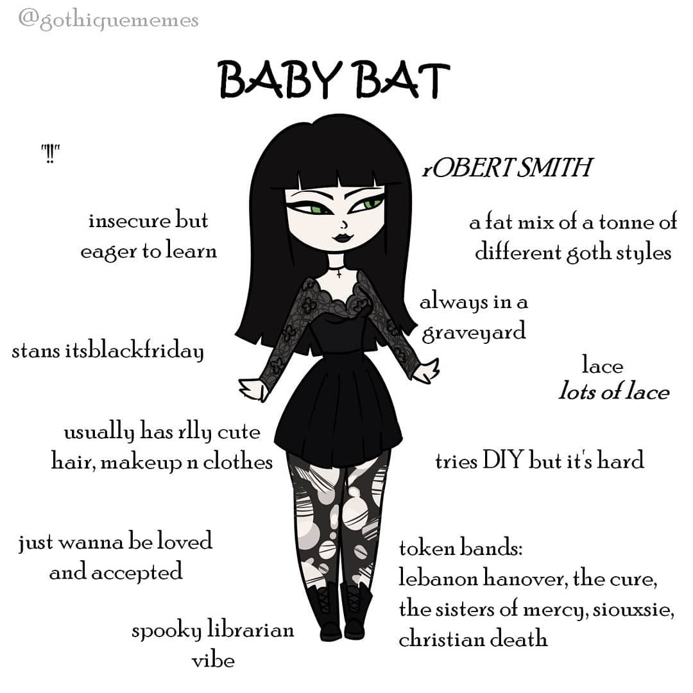
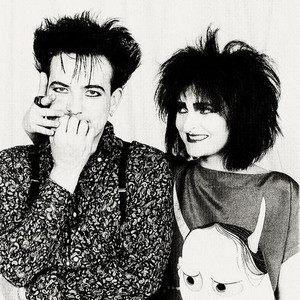

A subcultura gótica é um movimento cultural com surgimento no final dos anos 70, com forte influência pelo gênero post-punk. Ela é caracterizada pela estética sombria, valorizando temas como melancolia, introspecção, autoconhecimento, romantismo, itens nos quais são muito negligenciados ou visto por maus olhos pela sociedade.
Pessoas adeptas a subcultura normalmente costumam se identificar com as músicas de atmosfera obscura, como darkwave (veja o artigo sobre bandas góticas), juntamente da estética acompanhada de roupas escuras, maquiagens impactantes com foco no preto e branco, terror clássico e arte dramática.
Apesar de ser um movimento que à primeira vista pareça focar no "macabro ou bizarro", é uma subbultura muito ampla, criativa e diversa, reunindo pessoas que buscam temas como beleza melancólica e formas alternativas de expressão, além de que no geral são pessoas muito receptivas!
Apesar dos olhares de julgamentos da sociedade a quem é ou acompanha a cena, ela se apoia em muitos valores, dentre eles o respeito às diferenças, cada um tem sua individualidade! Liberdade Individual e repúdio a qualquer forma de preconceito. A subultura sempre foi espaço de acolhimento a comunidade LGBTQIAP+, artistas que não se encaixam nos padrões e o gótico é uma cena que celebra empatia, expressão pessoal sem julgamentos.

A subcultura gótica possui vários tipos de estéticas e inúmeras vertentes, porém, focarei mais em 3 vertentes, sendo duas principais na subcultura e a terceira sendo focada no âmbito profissional e corporativo
Baby Bats, ou bebês morcegos, em tradução livre, é um jeito carinhoso de dar as boas vindas em um novato na subcultura gótica, alguém que está aprendendo sobre os pilares, ouvir músicas de gêneros góticos, assistindo filmes, lendo livros, ou seja, alguém que deseja e tem vontade de conhecer mais, são os entusiastas da subcultra.

Trad Goths ou góticos tradicionais, são os membros adeptos a estética mais antiga e clássica do movimento gótico dos anos 80, mantendo-se fiel as raízes da subcultura e se mantém conectados com bandas pioneiras, como Bauhaus, Siouxsie and the Banshees e The Cure. A música é o principal pilar dos Trad Goths. A estética Trad Goth se caracteriza pelos cabelos desgrenhados e penteados chamativos.

Corp Goth ou Gótico Corporativo não está atelado a um gênero musical específico, é uma estética que integra ambientes de trabalhos formais com a subcultura, ambientes nos quais possuem códigos de vestimenta rígidos, e ser gótico também é ser flexível e adaptável! Os looks são repletos de peças de escritório como blazes, calças retas, cores escuras, toques góticos sutis, ou seja, não deixa de ser uma forma de se expressar, apenas adaptada a um conceito e ambiente.